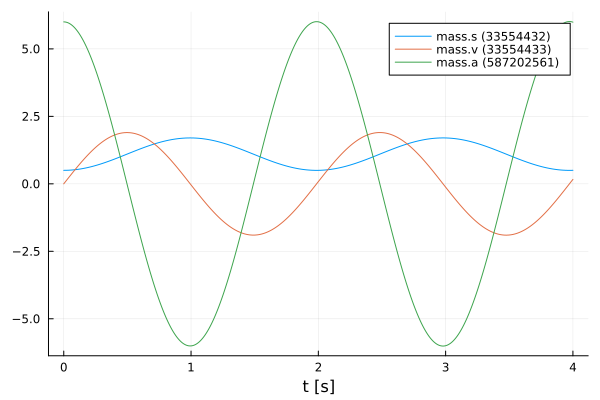
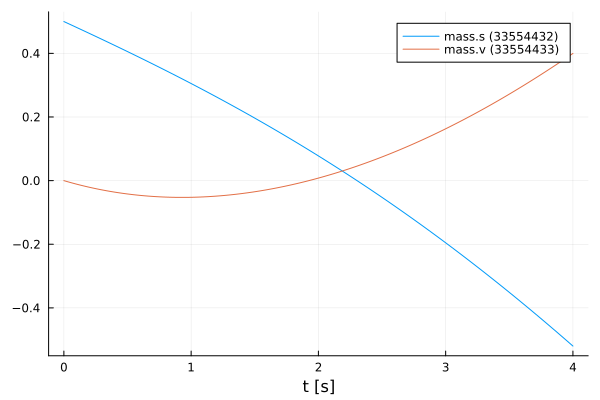
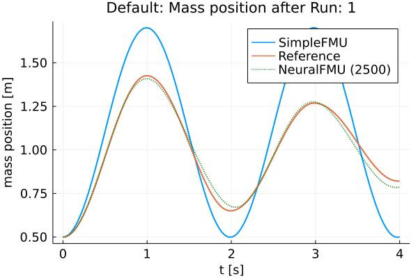
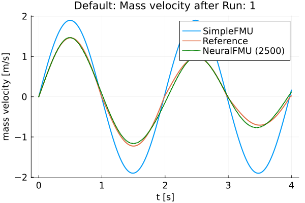
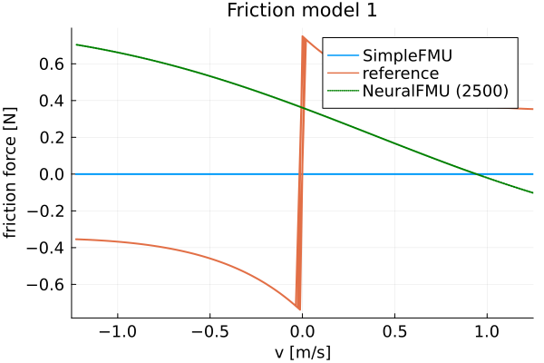
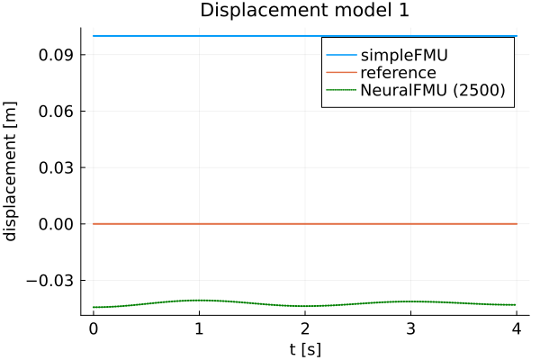
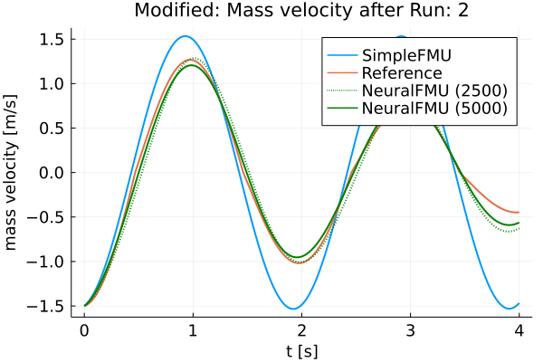
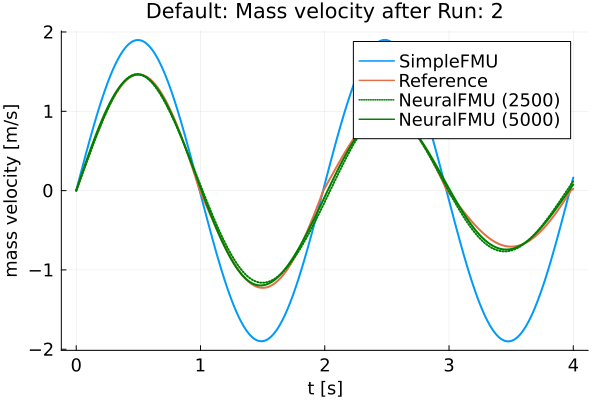
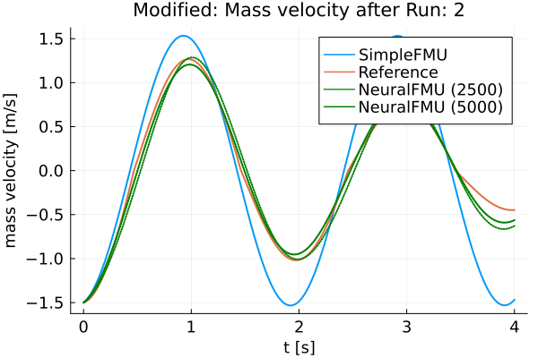
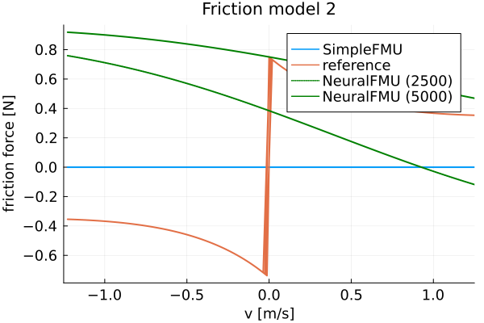

ME-NeuralFMU from the Modelica Conference 2021
Tutorial by Johannes Stoljar, Tobias Thummerer
License
Copyright (c) 2021 Tobias Thummerer, Lars Mikelsons, Johannes Stoljar
Licensed under the MIT license. See LICENSE file in the project root for details.
Motivation
The Julia Package FMIFlux.jl is motivated by the application of hybrid modeling. This package enables the user to integrate his simulation model between neural networks (NeuralFMU). For this, the simulation model must be exported as FMU (functional mock-up unit), which corresponds to a widely used standard. The big advantage of hybrid modeling with artificial neural networks is, that the effects that are difficult to model (because they might be unknown) can be easily learned by the neural networks. For this purpose, the NeuralFMU is trained with measurement data containing the not modeled physical effect. The final product is a simulation model including the originally not modeled effects. Another big advantage of the NeuralFMU is that it works with little data, because the FMU already contains the characteristic functionality of the simulation and only the missing effects are added.
NeuralFMUs do not need to be as easy as in this example. Basically a NeuralFMU can combine different ANN topologies that manipulate any FMU-input (system state, system inputs, time) and any FMU-output (system state derivative, system outputs, other system variables). However, for this example a NeuralFMU topology as shown in the following picture is used.

NeuralFMU (ME) from [1].
Introduction to the example
In this example, simplified modeling of a one-dimensional spring pendulum (without friction) is compared to a model of the same system that includes a nonlinear friction model. The FMU with the simplified model will be named simpleFMU in the following and the model with the friction will be named realFMU. At the beginning, the actual state of both simulations is shown, whereby clear deviations can be seen in the graphs. In addition, the initial states are changed for both models and these graphs are also contrasted, and the differences can again be clearly seen. The realFMU serves as a reference graph. The simpleFMU is then integrated into a NeuralFMU architecture and a training of the entire network is performed. After the training the final state is compared again to the realFMU. It can be clearly seen that by using the NeuralFMU, learning of the friction process has taken place.
Target group
The example is primarily intended for users who work in the field of first principle and/or hybrid modeling and are further interested in hybrid model building. The example wants to show how simple it is to combine FMUs with machine learning and to illustrate the advantages of this approach.
Other formats
Besides, this Jupyter Notebook there is also a Julia file with the same name, which contains only the code cells. For the documentation there is a Markdown file corresponding to the notebook.
Getting started
Installation prerequisites
| Description | Command | Alternative | |
|---|---|---|---|
| 1. | Enter Package Manager via | ] | |
| 2. | Install FMI via | add FMI | add " https://github.com/ThummeTo/FMI.jl " |
| 3. | Install FMIFlux via | add FMIFlux | add " https://github.com/ThummeTo/FMIFlux.jl " |
| 4. | Install FMIZoo via | add FMIZoo | add " https://github.com/ThummeTo/FMIZoo.jl " |
| 5. | Install Flux via | add Flux | |
| 6. | Install DifferentialEquations via | add DifferentialEquations | |
| 7. | Install Plots via | add Plots | |
| 8. | Install Random via | add Random |
Code section
To run the example, the previously installed packages must be included.
# imports
using FMI
using FMIFlux
using FMIZoo
using Flux
using DifferentialEquations: Tsit5
import Plots
# set seed
import Random
Random.seed!(1234);After importing the packages, the path to the Functional Mock-up Units (FMUs) is set. The exported FMU is a model meeting the Functional Mock-up Interface (FMI) Standard. The FMI is a free standard (fmi-standard.org) that defines a container and an interface to exchange dynamic models using a combination of XML files, binaries and C code zipped into a single file.
The object-orientated structure of the SpringPendulum1D (simpleFMU) can be seen in the following graphic and corresponds to a simple modeling.

In contrast, the model SpringFrictionPendulum1D (realFMU) is somewhat more accurate, because it includes a friction component.

Next, the start time and end time of the simulation are set. Finally, a step size is specified to store the results of the simulation at these time steps.
tStart = 0.0
tStep = 0.01
tStop = 4.0
tSave = collect(tStart:tStep:tStop)401-element Vector{Float64}:
0.0
0.01
0.02
0.03
0.04
0.05
0.06
0.07
0.08
0.09
0.1
0.11
0.12
⋮
3.89
3.9
3.91
3.92
3.93
3.94
3.95
3.96
3.97
3.98
3.99
4.0RealFMU
In the next lines of code the FMU of the realFMU model from FMIZoo.jl is loaded and the information about the FMU is shown.
realFMU = fmiLoad("SpringFrictionPendulum1D", "Dymola", "2022x")
fmiInfo(realFMU)┌ Info: fmi2Unzip(...): Successfully unzipped 153 files at `/tmp/fmijl_zvQBFy/SpringFrictionPendulum1D`.
└ @ FMIImport /home/runner/.julia/packages/FMIImport/g4GUl/src/FMI2_ext.jl:76
┌ Info: fmi2Load(...): FMU resources location is `file:////tmp/fmijl_zvQBFy/SpringFrictionPendulum1D/resources`
└ @ FMIImport /home/runner/.julia/packages/FMIImport/g4GUl/src/FMI2_ext.jl:192
┌ Info: fmi2Load(...): FMU supports both CS and ME, using CS as default if nothing specified.
└ @ FMIImport /home/runner/.julia/packages/FMIImport/g4GUl/src/FMI2_ext.jl:195
#################### Begin information for FMU ####################
Model name: SpringFrictionPendulum1D
FMI-Version: 2.0
GUID: {2e178ad3-5e9b-48ec-a7b2-baa5669efc0c}
Generation tool: Dymola Version 2022x (64-bit), 2021-10-08
Generation time: 2022-05-19T06:54:12Z
Var. naming conv.: structured
Event indicators: 24
Inputs: 0
Outputs: 0
States: 2
33554432 ["mass.s"]
33554433 ["mass.v", "mass.v_relfric"]
Supports Co-Simulation: true
Model identifier: SpringFrictionPendulum1D
Get/Set State: true
Serialize State: true
Dir. Derivatives: true
Var. com. steps: true
Input interpol.: true
Max order out. der.: 1
Supports Model-Exchange: true
Model identifier: SpringFrictionPendulum1D
Get/Set State: true
Serialize State: true
Dir. Derivatives: true
##################### End information for FMU #####################In the following two subsections, the realFMU is simulated twice with different initial states to show what effect the choice of initial states has.
Default initial states
In the next steps the parameters are defined. The first parameter is the initial position of the mass, which is initialized with $0.5m$, the second parameter is the initial velocity, which is initialized with $0\frac{m}{s}$. In the function fmiSimulate() the realFMU is simulated, still specifying the start and end time, the parameters and which variables are recorded. After the simulation is finished the result of the realFMU can be plotted. This plot also serves as a reference for the other model (simpleFMU). The extracted data will still be needed later on.
initStates = ["s0", "v0"]
x₀ = [0.5, 0.0]
params = Dict(zip(initStates, x₀))
vrs = ["mass.s", "mass.v", "mass.a", "mass.f"]
realSimData = fmiSimulate(realFMU, tStart, tStop; parameters=params, recordValues=vrs, saveat=tSave)
posReal = fmi2GetSolutionValue(realSimData, "mass.s")
velReal = fmi2GetSolutionValue(realSimData, "mass.v")
fmiPlot(realSimData)Define functions
The structure of the previous code section is used more often in the further sections, so for clarity the previously explained code section for setting the paramters and simulating are combined into one function simulate().
function simulate(FMU, initStates, x₀, variables, tStart, tStop, tSave)
params = Dict(zip(initStates, x₀))
return fmiSimulate(FMU, tStart, tStop; parameters=params, recordValues=variables, saveat=tSave)
endsimulate (generic function with 1 method)Also, a function to extract the position and velocity from the simulation data is created.
function extractPosVel(simData)
if simData.states === nothing
posData = fmi2GetSolutionValue(simData, "mass.s")
velData = fmi2GetSolutionValue(simData, "mass.v")
else
posData = fmi2GetSolutionState(simData, 1; isIndex=true)
velData = fmi2GetSolutionState(simData, 2; isIndex=true)
end
return posData, velData
endextractPosVel (generic function with 1 method)Modified initial states
In contrast to the previous section, other initial states are selected. The position of the mass is initialized with $1.0m$ and the velocity is initialized with $-1.5\frac{m}{s}$. With the modified initial states the realFMU is simulated and a graph is generated.
xMod₀ = [1.0, -1.5]
realSimDataMod = simulate(realFMU, initStates, xMod₀, vrs, tStart, tStop, tSave)
fmiPlot(realSimDataMod)After the plots are created, the FMU is unloaded.
fmiUnload(realFMU)SimpleFMU
The following lines load the simpleFMU from FMIZoo.jl.
simpleFMU = fmiLoad("SpringPendulum1D", "Dymola", "2022x")
fmiInfo(simpleFMU)#################### Begin information for FMU ####################
Model name: SpringPendulum1D
FMI-Version: 2.0
GUID: {fc15d8c4-758b-48e6-b00e-5bf47b8b14e5}
Generation tool: Dymola Version 2022x (64-bit), 2021-10-08
Generation time: 2022-05-19T06:54:23Z
Var. naming conv.: structured
Event indicators: 0
Inputs: 0
Outputs: 0
States: 2
33554432 ["mass.s"]
33554433 ["mass.v"]
Supports Co-Simulation: true
Model identifier: SpringPendulum1D
Get/Set State: true
Serialize State: true
Dir. Derivatives: true
Var. com. steps: true
Input interpol.: true
Max order out. der.: 1
Supports Model-Exchange: true
Model identifier: SpringPendulum1D
Get/Set State: true
Serialize State: true
Dir. Derivatives: true
##################### End information for FMU #####################
┌ Info: fmi2Unzip(...): Successfully unzipped 153 files at `/tmp/fmijl_MayZ3w/SpringPendulum1D`.
└ @ FMIImport /home/runner/.julia/packages/FMIImport/g4GUl/src/FMI2_ext.jl:76
┌ Info: fmi2Load(...): FMU resources location is `file:////tmp/fmijl_MayZ3w/SpringPendulum1D/resources`
└ @ FMIImport /home/runner/.julia/packages/FMIImport/g4GUl/src/FMI2_ext.jl:192
┌ Info: fmi2Load(...): FMU supports both CS and ME, using CS as default if nothing specified.
└ @ FMIImport /home/runner/.julia/packages/FMIImport/g4GUl/src/FMI2_ext.jl:195The differences between both systems can be clearly seen from the plots in the subchapters. In the plot for the realFMU it can be seen that the oscillation continues to decrease due to the effect of the friction. If you simulate long enough, the oscillation would come to a standstill in a certain time. The oscillation in the simpleFMU behaves differently, since the friction was not taken into account here. The oscillation in this model would continue to infinity with the same oscillation amplitude. From this observation the desire of an improvement of this model arises.
In the following two subsections, the simpleFMU is simulated twice with different initial states to show what effect the choice of initial states has.
Default initial states
Similar to the simulation of the realFMU, the simpleFMU is also simulated with the default values for the position and velocity of the mass and then plotted. There is one difference, however, as another state representing a fixed displacement is set. In addition, the last variable is also removed from the variables to be plotted.
initStates = ["mass_s0", "mass_v0", "fixed.s0"]
displacement = 0.1
xSimple₀ = vcat(x₀, displacement)
vrs = vrs[1:end-1]
simpleSimData = simulate(simpleFMU, initStates, xSimple₀, vrs, tStart, tStop, tSave)
fmiPlot(simpleSimData)
Modified initial states
The same values for the initial states are used for this simulation as for the simulation from the realFMU with the modified initial states.
xSimpleMod₀ = vcat(xMod₀, displacement)
simpleSimDataMod = simulate(simpleFMU, initStates, xSimpleMod₀, vrs, tStart, tStop, tSave)
fmiPlot(simpleSimDataMod)NeuralFMU
Loss function
In order to train our model, a loss function must be implemented. The solver of the NeuralFMU can calculate the gradient of the loss function. The gradient descent is needed to adjust the weights in the neural network so that the sum of the error is reduced and the model becomes more accurate.
The error function in this implementation consists of the mean of the mean squared errors. The first part of the addition is the deviation of the position and the second part is the deviation of the velocity. The mean squared error (mse) for the position consists from the real position of the realFMU simulation (posReal) and the position data of the network (posNet). The mean squared error for the velocity consists of the real velocity of the realFMU simulation (velReal) and the velocity data of the network (velNet). $ loss = \frac{1}{2} \Bigl[ \frac{1}{n} \sum\limits{i=0}^n (posReal[i] - posNet[i])^2 + \frac{1}{n} \sum\limits{i=0}^n (velReal[i] - velNet[i])^2 \Bigr]$
# loss function for training
function lossSum()
global x₀
solution = neuralFMU(x₀)
posNet, velNet = extractPosVel(solution)
(Flux.Losses.mse(posReal, posNet) + Flux.Losses.mse(velReal, velNet)) / 2.0
endlossSum (generic function with 1 method)Callback
To output the loss in certain time intervals, a callback is implemented as a function in the following. Here a counter is incremented, every fiftieth pass the loss function is called and the average error is printed out. Also, the parameters for the velocity in the first layer are kept to a fixed value.
# callback function for training
global counter = 0
function callb()
global counter, paramsNet
counter += 1
# freeze first layer parameters (2,4,6) for velocity -> (static) direct feed trough for velocity
# parameters for position (1,3,5) are learned
paramsNet[1][2] = 0.0
paramsNet[1][4] = 1.0
paramsNet[1][6] = 0.0
if counter % 50 == 1
avgLoss = lossSum()
@info " Loss [$counter]: $(round(avgLoss, digits=5))
Avg displacement in data: $(round(sqrt(avgLoss), digits=5))
Weight/Scale: $(paramsNet[1][1]) Bias/Offset: $(paramsNet[1][5])"
end
endcallb (generic function with 1 method)Functions for plotting
In this section some important functions for plotting are defined. The function generate_figure() creates a new figure object and sets some attributes.
function generate_figure(title, xLabel, yLabel, xlim="auto")
Plots.plot(
title=title, xlabel=xLabel, ylabel=yLabel, linewidth=2,
xtickfontsize=12, ytickfontsize=12, xguidefontsize=12, yguidefontsize=12,
legendfontsize=12, legend=:topright, xlim=xlim)
endgenerate_figure (generic function with 2 methods)In the following function, the data of the realFMU, simpleFMU and neuralFMU are summarized and displayed in a graph.
function plot_results(title, xLabel, yLabel, interval, realData, simpleData, neuralData)
linestyles = [:dot, :solid]
fig = generate_figure(title, xLabel, yLabel)
Plots.plot!(fig, interval, simpleData, label="SimpleFMU", linewidth=2)
Plots.plot!(fig, interval, realData, label="Reference", linewidth=2)
for i in 1:length(neuralData)
Plots.plot!(fig, neuralData[i][1], neuralData[i][2], label="NeuralFMU ($(i*2500))",
linewidth=2, linestyle=linestyles[i], linecolor=:green)
end
Plots.display(fig)
endplot_results (generic function with 1 method)This is the superordinate function, which at the beginning extracts the position and velocity from the simulation data (realSimData, realSimDataMod, simpleSimData,..., solutionAfterMod). Four graphs are then generated, each comparing the corresponding data from the realFMU, simpleFMU, and neuralFMU. The comparison is made with the simulation data from the simulation with the default and modified initial states. According to the data, the designation of the title and the naming of the axes is adapted.
function plot_all_results(realSimData, realSimDataMod, simpleSimData,
simpleSimDataMod, solutionAfter, solutionAfterMod)
# collect all data
posReal, velReal = extractPosVel(realSimData)
posRealMod, velRealMod = extractPosVel(realSimDataMod)
posSimple, velSimple = extractPosVel(simpleSimData)
posSimpleMod, velSimpleMod = extractPosVel(simpleSimDataMod)
run = length(solutionAfter)
posNeural, velNeural = [], []
posNeuralMod, velNeuralMod = [], []
for i in 1:run
dataNeural = extractPosVel(solutionAfter[i])
time = fmi2GetSolutionTime(solutionAfter[i])
push!(posNeural, (time, dataNeural[1]))
push!(velNeural, (time, dataNeural[2]))
dataNeuralMod = extractPosVel(solutionAfterMod[i])
time = fmi2GetSolutionTime(solutionAfterMod[i])
push!(posNeuralMod, (time, dataNeuralMod[1]))
push!(velNeuralMod, (time, dataNeuralMod[2]))
end
# plot results s (default initial states)
xLabel="t [s]"
yLabel="mass position [m]"
title = "Default: Mass position after Run: $(run)"
plot_results(title, xLabel, yLabel, tSave, posReal, posSimple, posNeural)
# plot results s (modified initial states)
title = "Modified: Mass position after Run: $(run)"
plot_results(title, xLabel, yLabel, tSave, posRealMod, posSimpleMod, posNeuralMod)
# plot results v (default initial states)
yLabel="mass velocity [m/s]"
title = "Default: Mass velocity after Run: $(run)"
plot_results(title, xLabel, yLabel, tSave, velReal, velSimple, velNeural)
# plot results v (modified initial states)
title = "Modified: Mass velocity after Run: $(run)"
plot_results(title, xLabel, yLabel, tSave, velRealMod, velSimpleMod, velNeuralMod)
endplot_all_results (generic function with 1 method)The function plot_friction_model() compares the friction model of the realFMU, simpleFMU and neuralFMU. For this, the velocity and force from the simulation data of the realFMU is needed. The force data is calculated with the extracted last layer of the neuralFMU to the real velocity in line 9 by iterating over the vector velReal. In the next rows, the velocity and force data (if available) for each of the three FMUs are combined into a matrix. The first row of the matrix corresponds to the later x-axis and here the velocity is plotted. The second row corresponds to the y-axis and here the force is plotted. This matrix is sorted and plotted by the first entries (velocity) with the function sortperm(). The graph with at least three graphs is plotted in line 33. As output this function has the forces of the neuralFMU.
function plot_friction_model(realSimData, netBottom, forces)
linestyles = [:dot, :solid]
velReal = fmi2GetSolutionValue(realSimData, "mass.v")
forceReal = fmi2GetSolutionValue(realSimData, "mass.f")
push!(forces, zeros(length(velReal)))
for i in 1:length(velReal)
forces[end][i] = -netBottom([velReal[i], 0.0])[2]
end
run = length(forces)
fig = generate_figure("Friction model $(run)", "v [m/s]", "friction force [N]", (-1.25, 1.25))
fricSimple = hcat(velReal, zeros(length(velReal)))
fricSimple[sortperm(fricSimple[:, 1]), :]
Plots.plot!(fig, fricSimple[:,1], fricSimple[:,2], label="SimpleFMU", linewidth=2)
fricReal = hcat(velReal, forceReal)
fricReal[sortperm(fricReal[:, 1]), :]
Plots.plot!(fig, fricReal[:,1], fricReal[:,2], label="reference", linewidth=2)
for i in 1:run
fricNeural = hcat(velReal, forces[i])
fricNeural[sortperm(fricNeural[:, 1]), :]
Plots.plot!(fig, fricNeural[:,1], fricNeural[:,2], label="NeuralFMU ($(i*2500))",
linewidth=2, linestyle=linestyles[i], linecolor=:green)
@info "Friction model $i mse: $(Flux.Losses.mse(fricNeural[:,2], fricReal[:,2]))"
end
flush(stderr)
Plots.display(fig)
return forces
endplot_friction_model (generic function with 1 method)The following function is used to display the different displacement modells of the realFMU, simpleFMU and neuralFMU. The displacement of the realFMU and simpleFMU is very trivial and is only a constant. The position data of the realFMU is needed to calculate the displacement. The displacement for the neuralFMU is calculated using the first extracted layer of the neural network, subtracting the real position and the displacement of the simpleFMU. Also in this function, the graphs of the three FMUs are compared in a plot.
function plot_displacement_model(realSimData, netTop, displacements, tSave, displacement)
linestyles = [:dot, :solid]
posReal = fmi2GetSolutionValue(realSimData, "mass.s")
push!(displacements, zeros(length(posReal)))
for i in 1:length(posReal)
displacements[end][i] = netTop([posReal[i], 0.0])[1] - posReal[i] - displacement
end
run = length(displacements)
fig = generate_figure("Displacement model $(run)", "t [s]", "displacement [m]")
Plots.plot!(fig, [tSave[1], tSave[end]], [displacement, displacement], label="simpleFMU", linewidth=2)
Plots.plot!(fig, [tSave[1], tSave[end]], [0.0, 0.0], label="reference", linewidth=2)
for i in 1:run
Plots.plot!(fig, tSave, displacements[i], label="NeuralFMU ($(i*2500))",
linewidth=2, linestyle=linestyles[i], linecolor=:green)
end
Plots.display(fig)
return displacements
endplot_displacement_model (generic function with 1 method)Structure of the NeuralFMU
In the following, the topology of the NeuralFMU is constructed. It consists of a dense layer that has exactly as many inputs and outputs as the model has states numStates (and therefore state derivatives). It also sets the initial weights and offsets for the first dense layer, as well as the activation function, which consists of the identity. An input layer follows, which then leads into the simpleFMU model. The ME-FMU computes the state derivatives for a given system state. Following the simpleFMU is a dense layer that has numStates states. The output of this layer consists of 8 output nodes and a identity activation function. The next layer has 8 input and output nodes with a tanh activation function. The last layer is again a dense layer with 8 input nodes and the number of states as outputs. Here, it is important that no tanh-activation function follows, because otherwise the pendulums state values would be limited to the interval $[-1;1]$.
# NeuralFMU setup
numStates = fmiGetNumberOfStates(simpleFMU)
# diagonal matrix
initW = zeros(numStates, numStates)
for i in 1:numStates
initW[i,i] = 1
end
net = Chain(Dense(initW, zeros(numStates), identity),
inputs -> fmiEvaluateME(simpleFMU, inputs),
Dense(numStates, 8, identity),
Dense(8, 8, tanh),
Dense(8, numStates))Chain(
Dense(2 => 2), [90m# 6 parameters[39m
var"#1#2"(),
Dense(2 => 8), [90m# 24 parameters[39m
Dense(8 => 8, tanh), [90m# 72 parameters[39m
Dense(8 => 2), [90m# 18 parameters[39m
) [90m # Total: 8 arrays, [39m120 parameters, 1016 bytes.Definition of the NeuralFMU
The instantiation of the ME-NeuralFMU is done as a one-liner. The FMU (simpleFMU), the structure of the network net, start tStart and end time tStop, the numerical solver Tsit5() and the time steps tSave for saving are specified.
neuralFMU = ME_NeuralFMU(simpleFMU, net, (tStart, tStop), Tsit5(); saveat=tSave);Plot before training
Here the state trajectory of the simpleFMU is recorded. Doesn't really look like a pendulum yet, but the system is random initialized by default. In the plots later on, the effect of learning can be seen.
solutionBefore = neuralFMU(x₀)
fmiPlot(solutionBefore)
Training of the NeuralFMU
For the training of the NeuralFMU the parameters are extracted. All parameters of the first layer are set to the absolute value.
# train
paramsNet = Flux.params(neuralFMU)
for i in 1:length(paramsNet[1])
if paramsNet[1][i] < 0.0
paramsNet[1][i] = -paramsNet[1][i]
end
endThe well-known ADAM optimizer for minimizing the gradient descent is used as further passing parameters. Additionally, the previously defined loss and callback function as well as a one for the number of epochs are passed. Only one epoch is trained so that the NeuralFMU is precompiled.
optim = ADAM()
Flux.train!(lossSum, paramsNet, Iterators.repeated((), 1), optim; cb=callb) ┌ Info: Loss [1]: 0.38766
│ Avg displacement in data: 0.62262
│ Weight/Scale: 1.0009999999789518 Bias/Offset: 0.0009999999760423974
└ @ Main In[13]:15Some vectors for collecting data are initialized and the number of runs, epochs and iterations are set.
solutionAfter = []
solutionAfterMod = []
forces = []
displacements = []
numRuns = 2
numEpochs= 5
numIterations = 500;Training loop
The code section shown here represents the training loop. The loop is structured so that it has numRuns runs, where each run has numEpochs epochs, and the training is performed at each epoch with numIterations iterations. In lines 9 and 10, the data for the neuralFMU for the default and modified initial states are appended to the corresponding vectors. The plots for the opposition of position and velocity is done in line 13 by calling the function plot_all_results. In the following lines the last layers are extracted from the neuralFMU and formed into an independent network netBottom. The parameters for the netBottom network come from the original architecture and are shared. In line 20, the new network is used to represent the friction model in a graph. An analogous construction of the next part of the training loop, where here the first layer is taken from the neuralFMU and converted to its own network netTop. This network is used to record the displacement model. The different graphs are generated for each run and can thus be compared.
for run in 1:numRuns
@time for epoch in 1:numEpochs
@info "Run: $(run)/$(numRuns) Epoch: $(epoch)/$(numEpochs)"
Flux.train!(lossSum, paramsNet, Iterators.repeated((), numIterations), optim; cb=callb)
end
flush(stderr)
flush(stdout)
push!(solutionAfter, neuralFMU(x₀))
push!(solutionAfterMod, neuralFMU(xMod₀))
# generate all plots for the position and velocity
plot_all_results(realSimData, realSimDataMod, simpleSimData, simpleSimDataMod, solutionAfter, solutionAfterMod)
# friction model extraction
layersBottom = neuralFMU.neuralODE.model.layers[3:5]
netBottom = Chain(layersBottom...)
transferFlatParams!(netBottom, paramsNet, 7)
forces = plot_friction_model(realSimData, netBottom, forces)
# displacement model extraction
layersTop = neuralFMU.neuralODE.model.layers[1:1]
netTop = Chain(layersTop...)
transferFlatParams!(netTop, paramsNet, 1)
displacements = plot_displacement_model(realSimData, netTop, displacements, tSave, displacement)
end┌ Info: Run: 1/2 Epoch: 1/5
└ @ Main In[25]:3
┌ Info: Loss [51]: 0.27987
│ Avg displacement in data: 0.52903
│ Weight/Scale: 1.022779697284623 Bias/Offset: 0.02359101792044668
└ @ Main In[13]:15
┌ Info: Loss [101]: 0.23462
│ Avg displacement in data: 0.48438
│ Weight/Scale: 1.0072353050582448 Bias/Offset: 0.012056602671214316
└ @ Main In[13]:15
┌ Info: Loss [151]: 0.07568
│ Avg displacement in data: 0.27511
│ Weight/Scale: 1.0255580120192322 Bias/Offset: 0.05412667957540138
└ @ Main In[13]:15
┌ Info: Loss [201]: 0.03432
│ Avg displacement in data: 0.18527
│ Weight/Scale: 1.0514125944687294 Bias/Offset: 0.08365819560173457
└ @ Main In[13]:15
┌ Info: Loss [251]: 0.03042
│ Avg displacement in data: 0.1744
│ Weight/Scale: 1.0527700778185933 Bias/Offset: 0.08237076689524142
└ @ Main In[13]:15
┌ Info: Loss [301]: 0.02737
│ Avg displacement in data: 0.16543
│ Weight/Scale: 1.052737425798989 Bias/Offset: 0.08007695212378325
└ @ Main In[13]:15
┌ Info: Loss [351]: 0.02485
│ Avg displacement in data: 0.15764
│ Weight/Scale: 1.0518622719501225 Bias/Offset: 0.07737061538035035
└ @ Main In[13]:15
┌ Info: Loss [401]: 0.02285
│ Avg displacement in data: 0.15117
│ Weight/Scale: 1.0504836227801908 Bias/Offset: 0.07499335400018167
└ @ Main In[13]:15
┌ Info: Loss [451]: 0.02142
│ Avg displacement in data: 0.14634
│ Weight/Scale: 1.0485607453819945 Bias/Offset: 0.07270457252367053
└ @ Main In[13]:15
┌ Info: Loss [501]: 0.02011
│ Avg displacement in data: 0.14181
│ Weight/Scale: 1.046494608921536 Bias/Offset: 0.07091271954224898
└ @ Main In[13]:15
┌ Info: Run: 1/2 Epoch: 2/5
└ @ Main In[25]:3
┌ Info: Loss [551]: 0.0191
│ Avg displacement in data: 0.13819
│ Weight/Scale: 1.04437823945937 Bias/Offset: 0.06940294360224696
└ @ Main In[13]:15
┌ Info: Loss [601]: 0.01823
│ Avg displacement in data: 0.13501
│ Weight/Scale: 1.0420006897942085 Bias/Offset: 0.06799275634414724
└ @ Main In[13]:15
┌ Info: Loss [651]: 0.01734
│ Avg displacement in data: 0.13169
│ Weight/Scale: 1.0396628046500325 Bias/Offset: 0.06707172850331951
└ @ Main In[13]:15
┌ Info: Loss [701]: 0.01659
│ Avg displacement in data: 0.12879
│ Weight/Scale: 1.037233638129626 Bias/Offset: 0.06617316794762193
└ @ Main In[13]:15
┌ Info: Loss [751]: 0.01604
│ Avg displacement in data: 0.12666
│ Weight/Scale: 1.0349375108588967 Bias/Offset: 0.06568413227280896
└ @ Main In[13]:15
┌ Info: Loss [801]: 0.01509
│ Avg displacement in data: 0.12284
│ Weight/Scale: 1.032682753275887 Bias/Offset: 0.0653509984317564
└ @ Main In[13]:15
┌ Info: Loss [851]: 0.01426
│ Avg displacement in data: 0.11943
│ Weight/Scale: 1.0304021702729884 Bias/Offset: 0.06502358604423843
└ @ Main In[13]:15
┌ Info: Loss [901]: 0.01337
│ Avg displacement in data: 0.11561
│ Weight/Scale: 1.0280328408156676 Bias/Offset: 0.06453937847417446
└ @ Main In[13]:15
┌ Info: Loss [951]: 0.01247
│ Avg displacement in data: 0.11167
│ Weight/Scale: 1.0257845489687998 Bias/Offset: 0.06402444718622612
└ @ Main In[13]:15
┌ Info: Loss [1001]: 0.01159
│ Avg displacement in data: 0.10768
│ Weight/Scale: 1.0237404020446534 Bias/Offset: 0.06351019918379759
└ @ Main In[13]:15
┌ Info: Run: 1/2 Epoch: 3/5
└ @ Main In[25]:3
┌ Info: Loss [1051]: 0.01077
│ Avg displacement in data: 0.10376
│ Weight/Scale: 1.0219502254586328 Bias/Offset: 0.06315216043330164
└ @ Main In[13]:15
┌ Info: Loss [1101]: 0.00999
│ Avg displacement in data: 0.09997
│ Weight/Scale: 1.0204593391343655 Bias/Offset: 0.06300202166784759
└ @ Main In[13]:15
┌ Info: Loss [1151]: 0.00928
│ Avg displacement in data: 0.09632
│ Weight/Scale: 1.01908716117491 Bias/Offset: 0.06287942672621541
└ @ Main In[13]:15
┌ Info: Loss [1201]: 0.00859
│ Avg displacement in data: 0.09269
│ Weight/Scale: 1.0177819148148846 Bias/Offset: 0.06276356216009435
└ @ Main In[13]:15
┌ Info: Loss [1251]: 0.00792
│ Avg displacement in data: 0.08899
│ Weight/Scale: 1.016437826569848 Bias/Offset: 0.0625518790503612
└ @ Main In[13]:15
┌ Info: Loss [1301]: 0.0072
│ Avg displacement in data: 0.08485
│ Weight/Scale: 1.0150392235034453 Bias/Offset: 0.06217107277554704
└ @ Main In[13]:15
┌ Info: Loss [1351]: 0.00646
│ Avg displacement in data: 0.08039
│ Weight/Scale: 1.0137616569636536 Bias/Offset: 0.06170848883682959
└ @ Main In[13]:15
┌ Info: Loss [1401]: 0.00583
│ Avg displacement in data: 0.07635
│ Weight/Scale: 1.01264973185929 Bias/Offset: 0.061049059219063465
└ @ Main In[13]:15
┌ Info: Loss [1451]: 0.00536
│ Avg displacement in data: 0.07322
│ Weight/Scale: 1.0117686350441604 Bias/Offset: 0.060379014929978686
└ @ Main In[13]:15
┌ Info: Loss [1501]: 0.00499
│ Avg displacement in data: 0.07064
│ Weight/Scale: 1.0110640560975732 Bias/Offset: 0.059815806997252564
└ @ Main In[13]:15
┌ Info: Run: 1/2 Epoch: 4/5
└ @ Main In[25]:3
┌ Info: Loss [1551]: 0.00467
│ Avg displacement in data: 0.06835
│ Weight/Scale: 1.0104592673987645 Bias/Offset: 0.059339984302401776
└ @ Main In[13]:15
┌ Info: Loss [1601]: 0.00439
│ Avg displacement in data: 0.06627
│ Weight/Scale: 1.0099091585330566 Bias/Offset: 0.058908290825086106
└ @ Main In[13]:15
┌ Info: Loss [1651]: 0.00413
│ Avg displacement in data: 0.06428
│ Weight/Scale: 1.0093927456600722 Bias/Offset: 0.058495123456024346
└ @ Main In[13]:15
┌ Info: Loss [1701]: 0.0039
│ Avg displacement in data: 0.06248
│ Weight/Scale: 1.0089248378327205 Bias/Offset: 0.058126054310056144
└ @ Main In[13]:15
┌ Info: Loss [1751]: 0.0037
│ Avg displacement in data: 0.06086
│ Weight/Scale: 1.0085033266188659 Bias/Offset: 0.05779962605767347
└ @ Main In[13]:15
┌ Info: Loss [1801]: 0.00352
│ Avg displacement in data: 0.05931
│ Weight/Scale: 1.0080951454022984 Bias/Offset: 0.05747006962486286
└ @ Main In[13]:15
┌ Info: Loss [1851]: 0.00335
│ Avg displacement in data: 0.05788
│ Weight/Scale: 1.0076825338267172 Bias/Offset: 0.0571179906710397
└ @ Main In[13]:15
┌ Info: Loss [1901]: 0.0032
│ Avg displacement in data: 0.05654
│ Weight/Scale: 1.0072865693757205 Bias/Offset: 0.05677160539642778
└ @ Main In[13]:15
┌ Info: Loss [1951]: 0.00306
│ Avg displacement in data: 0.0553
│ Weight/Scale: 1.0069158027102063 Bias/Offset: 0.05644398574911272
└ @ Main In[13]:15
┌ Info: Loss [2001]: 0.00293
│ Avg displacement in data: 0.05415
│ Weight/Scale: 1.0065678875895239 Bias/Offset: 0.05613436590434876
└ @ Main In[13]:15
┌ Info: Run: 1/2 Epoch: 5/5
└ @ Main In[25]:3
┌ Info: Loss [2051]: 0.00282
│ Avg displacement in data: 0.05307
│ Weight/Scale: 1.00623985337901 Bias/Offset: 0.05584065676709338
└ @ Main In[13]:15
┌ Info: Loss [2101]: 0.00271
│ Avg displacement in data: 0.05206
│ Weight/Scale: 1.0059291808177673 Bias/Offset: 0.05556087099379413
└ @ Main In[13]:15
┌ Info: Loss [2151]: 0.00261
│ Avg displacement in data: 0.0511
│ Weight/Scale: 1.0056346766879918 Bias/Offset: 0.055294585554171244
└ @ Main In[13]:15
┌ Info: Loss [2201]: 0.00252
│ Avg displacement in data: 0.0502
│ Weight/Scale: 1.0053556655128653 Bias/Offset: 0.05504210216883402
└ @ Main In[13]:15
┌ Info: Loss [2251]: 0.00244
│ Avg displacement in data: 0.04935
│ Weight/Scale: 1.0050905987347118 Bias/Offset: 0.05480215346371624
└ @ Main In[13]:15
┌ Info: Loss [2301]: 0.00236
│ Avg displacement in data: 0.04854
│ Weight/Scale: 1.0048376401665384 Bias/Offset: 0.054572470547144224
└ @ Main In[13]:15
┌ Info: Loss [2351]: 0.00228
│ Avg displacement in data: 0.04777
│ Weight/Scale: 1.0045953433572516 Bias/Offset: 0.05435117526259279
└ @ Main In[13]:15
┌ Info: Loss [2401]: 0.00221
│ Avg displacement in data: 0.04704
│ Weight/Scale: 1.004362913728288 Bias/Offset: 0.054137374026090083
└ @ Main In[13]:15
┌ Info: Loss [2451]: 0.00215
│ Avg displacement in data: 0.04635
│ Weight/Scale: 1.0041397200530493 Bias/Offset: 0.05393084846458077
└ @ Main In[13]:15
┌ Info: Loss [2501]: 0.00209
│ Avg displacement in data: 0.04568
│ Weight/Scale: 1.003925150310206 Bias/Offset: 0.053731496699864
└ @ Main In[13]:15
154.935506 seconds (307.70 M allocations: 121.459 GiB, 11.20% gc time)
┌ Warning: Invalid limits for x axis. Limits should be a symbol, or a two-element tuple or vector of numbers.
│ xlims = auto
└ @ Plots /home/runner/.julia/packages/Plots/W75kY/src/axes.jl:595
┌ Warning: Invalid limits for x axis. Limits should be a symbol, or a two-element tuple or vector of numbers.
│ xlims = auto
└ @ Plots /home/runner/.julia/packages/Plots/W75kY/src/axes.jl:595
┌ Warning: Invalid limits for x axis. Limits should be a symbol, or a two-element tuple or vector of numbers.
│ xlims = auto
└ @ Plots /home/runner/.julia/packages/Plots/W75kY/src/axes.jl:595
┌ Warning: Invalid limits for x axis. Limits should be a symbol, or a two-element tuple or vector of numbers.
│ xlims = auto
└ @ Plots /home/runner/.julia/packages/Plots/W75kY/src/axes.jl:595
┌ Warning: Invalid limits for x axis. Limits should be a symbol, or a two-element tuple or vector of numbers.
│ xlims = auto
└ @ Plots /home/runner/.julia/packages/Plots/W75kY/src/axes.jl:595
┌ Warning: Invalid limits for x axis. Limits should be a symbol, or a two-element tuple or vector of numbers.
│ xlims = auto
└ @ Plots /home/runner/.julia/packages/Plots/W75kY/src/axes.jl:595┌ Warning: Invalid limits for x axis. Limits should be a symbol, or a two-element tuple or vector of numbers.
│ xlims = auto
└ @ Plots /home/runner/.julia/packages/Plots/W75kY/src/axes.jl:595
┌ Warning: Invalid limits for x axis. Limits should be a symbol, or a two-element tuple or vector of numbers.
│ xlims = auto
└ @ Plots /home/runner/.julia/packages/Plots/W75kY/src/axes.jl:595
┌ Warning: Invalid limits for x axis. Limits should be a symbol, or a two-element tuple or vector of numbers.
│ xlims = auto
└ @ Plots /home/runner/.julia/packages/Plots/W75kY/src/axes.jl:595
┌ Warning: Invalid limits for x axis. Limits should be a symbol, or a two-element tuple or vector of numbers.
│ xlims = auto
└ @ Plots /home/runner/.julia/packages/Plots/W75kY/src/axes.jl:595
┌ Warning: Invalid limits for x axis. Limits should be a symbol, or a two-element tuple or vector of numbers.
│ xlims = auto
└ @ Plots /home/runner/.julia/packages/Plots/W75kY/src/axes.jl:595
┌ Warning: Invalid limits for x axis. Limits should be a symbol, or a two-element tuple or vector of numbers.
│ xlims = auto
└ @ Plots /home/runner/.julia/packages/Plots/W75kY/src/axes.jl:595
┌ Warning: Invalid limits for x axis. Limits should be a symbol, or a two-element tuple or vector of numbers.
│ xlims = auto
└ @ Plots /home/runner/.julia/packages/Plots/W75kY/src/axes.jl:595
┌ Warning: Invalid limits for x axis. Limits should be a symbol, or a two-element tuple or vector of numbers.
│ xlims = auto
└ @ Plots /home/runner/.julia/packages/Plots/W75kY/src/axes.jl:595
┌ Warning: Invalid limits for x axis. Limits should be a symbol, or a two-element tuple or vector of numbers.
│ xlims = auto
└ @ Plots /home/runner/.julia/packages/Plots/W75kY/src/axes.jl:595
┌ Warning: Invalid limits for x axis. Limits should be a symbol, or a two-element tuple or vector of numbers.
│ xlims = auto
└ @ Plots /home/runner/.julia/packages/Plots/W75kY/src/axes.jl:595
┌ Warning: Invalid limits for x axis. Limits should be a symbol, or a two-element tuple or vector of numbers.
│ xlims = auto
└ @ Plots /home/runner/.julia/packages/Plots/W75kY/src/axes.jl:595
┌ Warning: Invalid limits for x axis. Limits should be a symbol, or a two-element tuple or vector of numbers.
│ xlims = auto
└ @ Plots /home/runner/.julia/packages/Plots/W75kY/src/axes.jl:595┌ Warning: Invalid limits for x axis. Limits should be a symbol, or a two-element tuple or vector of numbers.
│ xlims = auto
└ @ Plots /home/runner/.julia/packages/Plots/W75kY/src/axes.jl:595
┌ Warning: Invalid limits for x axis. Limits should be a symbol, or a two-element tuple or vector of numbers.
│ xlims = auto
└ @ Plots /home/runner/.julia/packages/Plots/W75kY/src/axes.jl:595
┌ Warning: Invalid limits for x axis. Limits should be a symbol, or a two-element tuple or vector of numbers.
│ xlims = auto
└ @ Plots /home/runner/.julia/packages/Plots/W75kY/src/axes.jl:595
┌ Warning: Invalid limits for x axis. Limits should be a symbol, or a two-element tuple or vector of numbers.
│ xlims = auto
└ @ Plots /home/runner/.julia/packages/Plots/W75kY/src/axes.jl:595
┌ Warning: Invalid limits for x axis. Limits should be a symbol, or a two-element tuple or vector of numbers.
│ xlims = auto
└ @ Plots /home/runner/.julia/packages/Plots/W75kY/src/axes.jl:595
┌ Warning: Invalid limits for x axis. Limits should be a symbol, or a two-element tuple or vector of numbers.
│ xlims = auto
└ @ Plots /home/runner/.julia/packages/Plots/W75kY/src/axes.jl:595
┌ Info: Friction model 1 mse: 0.6262285600446067
└ @ Main In[17]:29

┌ Warning: Invalid limits for x axis. Limits should be a symbol, or a two-element tuple or vector of numbers.
│ xlims = auto
└ @ Plots /home/runner/.julia/packages/Plots/W75kY/src/axes.jl:595
┌ Warning: Invalid limits for x axis. Limits should be a symbol, or a two-element tuple or vector of numbers.
│ xlims = auto
└ @ Plots /home/runner/.julia/packages/Plots/W75kY/src/axes.jl:595
┌ Warning: Invalid limits for x axis. Limits should be a symbol, or a two-element tuple or vector of numbers.
│ xlims = auto
└ @ Plots /home/runner/.julia/packages/Plots/W75kY/src/axes.jl:595
┌ Warning: Invalid limits for x axis. Limits should be a symbol, or a two-element tuple or vector of numbers.
│ xlims = auto
└ @ Plots /home/runner/.julia/packages/Plots/W75kY/src/axes.jl:595
┌ Warning: Invalid limits for x axis. Limits should be a symbol, or a two-element tuple or vector of numbers.
│ xlims = auto
└ @ Plots /home/runner/.julia/packages/Plots/W75kY/src/axes.jl:595
┌ Warning: Invalid limits for x axis. Limits should be a symbol, or a two-element tuple or vector of numbers.
│ xlims = auto
└ @ Plots /home/runner/.julia/packages/Plots/W75kY/src/axes.jl:595
┌ Info: Run: 2/2 Epoch: 1/5
└ @ Main In[25]:3
┌ Info: Loss [2551]: 0.00203
│ Avg displacement in data: 0.04504
│ Weight/Scale: 1.0037186668122509 Bias/Offset: 0.053538999140937474
└ @ Main In[13]:15
┌ Info: Loss [2601]: 0.00197
│ Avg displacement in data: 0.04443
│ Weight/Scale: 1.0035197341051127 Bias/Offset: 0.05335311681177734
└ @ Main In[13]:15
┌ Info: Loss [2651]: 0.00192
│ Avg displacement in data: 0.04384
│ Weight/Scale: 1.0033279776030726 Bias/Offset: 0.05317346602135632
└ @ Main In[13]:15
┌ Info: Loss [2701]: 0.00187
│ Avg displacement in data: 0.04327
│ Weight/Scale: 1.003142812812645 Bias/Offset: 0.05299948232208313
└ @ Main In[13]:15
┌ Info: Loss [2751]: 0.00183
│ Avg displacement in data: 0.04273
│ Weight/Scale: 1.0029637049559896 Bias/Offset: 0.05283052466323941
└ @ Main In[13]:15
┌ Info: Loss [2801]: 0.00178
│ Avg displacement in data: 0.0422
│ Weight/Scale: 1.002790106448768 Bias/Offset: 0.052665895606741404
└ @ Main In[13]:15
┌ Info: Loss [2851]: 0.00174
│ Avg displacement in data: 0.04169
│ Weight/Scale: 1.0026215729412737 Bias/Offset: 0.052504872505070264
└ @ Main In[13]:15
┌ Info: Loss [2901]: 0.0017
│ Avg displacement in data: 0.0412
│ Weight/Scale: 1.0024574650306628 Bias/Offset: 0.052346546770078724
└ @ Main In[13]:15
┌ Info: Loss [2951]: 0.00166
│ Avg displacement in data: 0.04073
│ Weight/Scale: 1.0022970600102459 Bias/Offset: 0.052190006279017175
└ @ Main In[13]:15
┌ Info: Loss [3001]: 0.00162
│ Avg displacement in data: 0.04028
│ Weight/Scale: 1.0021327973729572 Bias/Offset: 0.052052831988056436
└ @ Main In[13]:15
┌ Info: Run: 2/2 Epoch: 2/5
└ @ Main In[25]:3
┌ Info: Loss [3051]: 0.00159
│ Avg displacement in data: 0.03983
│ Weight/Scale: 1.0019345304664056 Bias/Offset: 0.05185914703668214
└ @ Main In[13]:15
┌ Info: Loss [3101]: 0.00155
│ Avg displacement in data: 0.0394
│ Weight/Scale: 1.0017619788469314 Bias/Offset: 0.05168169726132153
└ @ Main In[13]:15
┌ Info: Loss [3151]: 0.00162
│ Avg displacement in data: 0.04026
│ Weight/Scale: 1.0016296703830894 Bias/Offset: 0.05153413247882868
└ @ Main In[13]:15
┌ Info: Loss [3201]: 0.00149
│ Avg displacement in data: 0.03859
│ Weight/Scale: 1.0013686984394816 Bias/Offset: 0.05130912514281167
└ @ Main In[13]:15
┌ Info: Loss [3251]: 0.00146
│ Avg displacement in data: 0.0382
│ Weight/Scale: 1.001177321427596 Bias/Offset: 0.0511013683579891
└ @ Main In[13]:15
┌ Info: Loss [3301]: 0.00143
│ Avg displacement in data: 0.03782
│ Weight/Scale: 1.0009861825908069 Bias/Offset: 0.050889261746084054
└ @ Main In[13]:15
┌ Info: Loss [3351]: 0.00141
│ Avg displacement in data: 0.03753
│ Weight/Scale: 1.0007627087351232 Bias/Offset: 0.05068218653064382
└ @ Main In[13]:15
┌ Info: Loss [3401]: 0.00138
│ Avg displacement in data: 0.0371
│ Weight/Scale: 1.0005349899583924 Bias/Offset: 0.05042993582952337
└ @ Main In[13]:15
┌ Info: Loss [3451]: 0.00135
│ Avg displacement in data: 0.03675
│ Weight/Scale: 1.0003217120251318 Bias/Offset: 0.05018238655595502
└ @ Main In[13]:15
┌ Info: Loss [3501]: 0.00134
│ Avg displacement in data: 0.03664
│ Weight/Scale: 1.0000845377688474 Bias/Offset: 0.04991099380023528
└ @ Main In[13]:15
┌ Info: Run: 2/2 Epoch: 3/5
└ @ Main In[25]:3
┌ Info: Loss [3551]: 0.0013
│ Avg displacement in data: 0.0361
│ Weight/Scale: 0.9998194188972589 Bias/Offset: 0.04965383126546695
└ @ Main In[13]:15
┌ Info: Loss [3601]: 0.00128
│ Avg displacement in data: 0.03577
│ Weight/Scale: 0.9995763213659571 Bias/Offset: 0.04936204266468577
└ @ Main In[13]:15
┌ Info: Loss [3651]: 0.00126
│ Avg displacement in data: 0.03546
│ Weight/Scale: 0.9993288568750353 Bias/Offset: 0.04905838376453268
└ @ Main In[13]:15
┌ Info: Loss [3701]: 0.00124
│ Avg displacement in data: 0.03516
│ Weight/Scale: 0.9990801136644812 Bias/Offset: 0.04874710828044736
└ @ Main In[13]:15
┌ Info: Loss [3751]: 0.00122
│ Avg displacement in data: 0.03487
│ Weight/Scale: 0.9987156784400567 Bias/Offset: 0.04840950361010024
└ @ Main In[13]:15
┌ Info: Loss [3801]: 0.00119
│ Avg displacement in data: 0.03456
│ Weight/Scale: 0.9984204583340729 Bias/Offset: 0.04804486543329714
└ @ Main In[13]:15
┌ Info: Loss [3851]: 0.00117
│ Avg displacement in data: 0.03428
│ Weight/Scale: 0.9981227522385676 Bias/Offset: 0.04766257713266945
└ @ Main In[13]:15
┌ Info: Loss [3901]: 0.00116
│ Avg displacement in data: 0.034
│ Weight/Scale: 0.9978171522249286 Bias/Offset: 0.04726508062007946
└ @ Main In[13]:15
┌ Info: Loss [3951]: 0.00114
│ Avg displacement in data: 0.03372
│ Weight/Scale: 0.9975028470244203 Bias/Offset: 0.04685173360100839
└ @ Main In[13]:15
┌ Info: Loss [4001]: 0.00113
│ Avg displacement in data: 0.03356
│ Weight/Scale: 0.9971245249194095 Bias/Offset: 0.046421230684507174
└ @ Main In[13]:15
┌ Info: Run: 2/2 Epoch: 4/5
└ @ Main In[25]:3
┌ Info: Loss [4051]: 0.0011
│ Avg displacement in data: 0.03318
│ Weight/Scale: 0.9967308794405376 Bias/Offset: 0.045955323321175086
└ @ Main In[13]:15
┌ Info: Loss [4101]: 0.00108
│ Avg displacement in data: 0.03291
│ Weight/Scale: 0.996372026435943 Bias/Offset: 0.04546961974514397
└ @ Main In[13]:15
┌ Info: Loss [4151]: 0.00107
│ Avg displacement in data: 0.03265
│ Weight/Scale: 0.9959972818206619 Bias/Offset: 0.04495703265779214
└ @ Main In[13]:15
┌ Info: Loss [4201]: 0.00105
│ Avg displacement in data: 0.03239
│ Weight/Scale: 0.9956101964745232 Bias/Offset: 0.04442238053340015
└ @ Main In[13]:15
┌ Info: Loss [4251]: 0.00104
│ Avg displacement in data: 0.03228
│ Weight/Scale: 0.9951971468875733 Bias/Offset: 0.043914675174162573
└ @ Main In[13]:15
┌ Info: Loss [4301]: 0.00102
│ Avg displacement in data: 0.03188
│ Weight/Scale: 0.9946979169124356 Bias/Offset: 0.04327281688897021
└ @ Main In[13]:15
┌ Info: Loss [4351]: 0.001
│ Avg displacement in data: 0.03163
│ Weight/Scale: 0.9942532949094885 Bias/Offset: 0.04264469096745885
└ @ Main In[13]:15
┌ Info: Loss [4401]: 0.00098
│ Avg displacement in data: 0.03138
│ Weight/Scale: 0.9937950678052988 Bias/Offset: 0.041989315357372235
└ @ Main In[13]:15
┌ Info: Loss [4451]: 0.00107
│ Avg displacement in data: 0.03265
│ Weight/Scale: 0.9933600254942384 Bias/Offset: 0.04134330561282964
└ @ Main In[13]:15
┌ Info: Loss [4501]: 0.00095
│ Avg displacement in data: 0.03088
│ Weight/Scale: 0.9927299303231354 Bias/Offset: 0.04057831966635877
└ @ Main In[13]:15
┌ Info: Run: 2/2 Epoch: 5/5
└ @ Main In[25]:3
┌ Info: Loss [4551]: 0.00094
│ Avg displacement in data: 0.03064
│ Weight/Scale: 0.9922130251051114 Bias/Offset: 0.03982251459436595
└ @ Main In[13]:15
┌ Info: Loss [4601]: 0.00092
│ Avg displacement in data: 0.03039
│ Weight/Scale: 0.9916723084256412 Bias/Offset: 0.03902388313425868
└ @ Main In[13]:15
┌ Info: Loss [4651]: 0.00091
│ Avg displacement in data: 0.0302
│ Weight/Scale: 0.99109511162088 Bias/Offset: 0.038175757169239335
└ @ Main In[13]:15
┌ Info: Loss [4701]: 0.0009
│ Avg displacement in data: 0.02993
│ Weight/Scale: 0.9904157713800947 Bias/Offset: 0.03730802636411343
└ @ Main In[13]:15
┌ Info: Loss [4751]: 0.00088
│ Avg displacement in data: 0.02966
│ Weight/Scale: 0.9898073521292846 Bias/Offset: 0.036392804885990455
└ @ Main In[13]:15
┌ Info: Loss [4801]: 0.00087
│ Avg displacement in data: 0.02942
│ Weight/Scale: 0.9891697409448782 Bias/Offset: 0.03542286870941927
└ @ Main In[13]:15
┌ Info: Loss [4851]: 0.00085
│ Avg displacement in data: 0.02918
│ Weight/Scale: 0.9885051335361306 Bias/Offset: 0.03440590176782293
└ @ Main In[13]:15
┌ Info: Loss [4901]: 0.00088
│ Avg displacement in data: 0.02969
│ Weight/Scale: 0.9877278380311985 Bias/Offset: 0.03330061916974685
└ @ Main In[13]:15
┌ Info: Loss [4951]: 0.00082
│ Avg displacement in data: 0.0287
│ Weight/Scale: 0.9870086380861818 Bias/Offset: 0.03224120742421287
└ @ Main In[13]:15
┌ Info: Loss [5001]: 0.00081
│ Avg displacement in data: 0.02846
│ Weight/Scale: 0.9862548713851412 Bias/Offset: 0.031070984962267467
└ @ Main In[13]:15
144.257930 seconds (283.72 M allocations: 112.720 GiB, 11.36% gc time)
┌ Warning: Invalid limits for x axis. Limits should be a symbol, or a two-element tuple or vector of numbers.
│ xlims = auto
└ @ Plots /home/runner/.julia/packages/Plots/W75kY/src/axes.jl:595
┌ Warning: Invalid limits for x axis. Limits should be a symbol, or a two-element tuple or vector of numbers.
│ xlims = auto
└ @ Plots /home/runner/.julia/packages/Plots/W75kY/src/axes.jl:595
┌ Warning: Invalid limits for x axis. Limits should be a symbol, or a two-element tuple or vector of numbers.
│ xlims = auto
└ @ Plots /home/runner/.julia/packages/Plots/W75kY/src/axes.jl:595
┌ Warning: Invalid limits for x axis. Limits should be a symbol, or a two-element tuple or vector of numbers.
│ xlims = auto
└ @ Plots /home/runner/.julia/packages/Plots/W75kY/src/axes.jl:595
┌ Warning: Invalid limits for x axis. Limits should be a symbol, or a two-element tuple or vector of numbers.
│ xlims = auto
└ @ Plots /home/runner/.julia/packages/Plots/W75kY/src/axes.jl:595
┌ Warning: Invalid limits for x axis. Limits should be a symbol, or a two-element tuple or vector of numbers.
│ xlims = auto
└ @ Plots /home/runner/.julia/packages/Plots/W75kY/src/axes.jl:595
┌ Warning: Invalid limits for x axis. Limits should be a symbol, or a two-element tuple or vector of numbers.
│ xlims = auto
└ @ Plots /home/runner/.julia/packages/Plots/W75kY/src/axes.jl:595
┌ Warning: Invalid limits for x axis. Limits should be a symbol, or a two-element tuple or vector of numbers.
│ xlims = auto
└ @ Plots /home/runner/.julia/packages/Plots/W75kY/src/axes.jl:595
┌ Warning: Invalid limits for x axis. Limits should be a symbol, or a two-element tuple or vector of numbers.
│ xlims = auto
└ @ Plots /home/runner/.julia/packages/Plots/W75kY/src/axes.jl:595
┌ Warning: Invalid limits for x axis. Limits should be a symbol, or a two-element tuple or vector of numbers.
│ xlims = auto
└ @ Plots /home/runner/.julia/packages/Plots/W75kY/src/axes.jl:595
┌ Warning: Invalid limits for x axis. Limits should be a symbol, or a two-element tuple or vector of numbers.
│ xlims = auto
└ @ Plots /home/runner/.julia/packages/Plots/W75kY/src/axes.jl:595
┌ Warning: Invalid limits for x axis. Limits should be a symbol, or a two-element tuple or vector of numbers.
│ xlims = auto
└ @ Plots /home/runner/.julia/packages/Plots/W75kY/src/axes.jl:595
┌ Warning: Invalid limits for x axis. Limits should be a symbol, or a two-element tuple or vector of numbers.
│ xlims = auto
└ @ Plots /home/runner/.julia/packages/Plots/W75kY/src/axes.jl:595
┌ Warning: Invalid limits for x axis. Limits should be a symbol, or a two-element tuple or vector of numbers.
│ xlims = auto
└ @ Plots /home/runner/.julia/packages/Plots/W75kY/src/axes.jl:595
┌ Warning: Invalid limits for x axis. Limits should be a symbol, or a two-element tuple or vector of numbers.
│ xlims = auto
└ @ Plots /home/runner/.julia/packages/Plots/W75kY/src/axes.jl:595
┌ Warning: Invalid limits for x axis. Limits should be a symbol, or a two-element tuple or vector of numbers.
│ xlims = auto
└ @ Plots /home/runner/.julia/packages/Plots/W75kY/src/axes.jl:595
┌ Warning: Invalid limits for x axis. Limits should be a symbol, or a two-element tuple or vector of numbers.
│ xlims = auto
└ @ Plots /home/runner/.julia/packages/Plots/W75kY/src/axes.jl:595
┌ Warning: Invalid limits for x axis. Limits should be a symbol, or a two-element tuple or vector of numbers.
│ xlims = auto
└ @ Plots /home/runner/.julia/packages/Plots/W75kY/src/axes.jl:595
┌ Warning: Invalid limits for x axis. Limits should be a symbol, or a two-element tuple or vector of numbers.
│ xlims = auto
└ @ Plots /home/runner/.julia/packages/Plots/W75kY/src/axes.jl:595
┌ Warning: Invalid limits for x axis. Limits should be a symbol, or a two-element tuple or vector of numbers.
│ xlims = auto
└ @ Plots /home/runner/.julia/packages/Plots/W75kY/src/axes.jl:595
┌ Warning: Invalid limits for x axis. Limits should be a symbol, or a two-element tuple or vector of numbers.
│ xlims = auto
└ @ Plots /home/runner/.julia/packages/Plots/W75kY/src/axes.jl:595
┌ Warning: Invalid limits for x axis. Limits should be a symbol, or a two-element tuple or vector of numbers.
│ xlims = auto
└ @ Plots /home/runner/.julia/packages/Plots/W75kY/src/axes.jl:595
┌ Warning: Invalid limits for x axis. Limits should be a symbol, or a two-element tuple or vector of numbers.
│ xlims = auto
└ @ Plots /home/runner/.julia/packages/Plots/W75kY/src/axes.jl:595
┌ Warning: Invalid limits for x axis. Limits should be a symbol, or a two-element tuple or vector of numbers.
│ xlims = auto
└ @ Plots /home/runner/.julia/packages/Plots/W75kY/src/axes.jl:595
┌ Info: Friction model 1 mse: 0.6262285600446067
└ @ Main In[17]:29
┌ Info: Friction model 2 mse: 0.8626321389471135
└ @ Main In[17]:29
┌ Warning: Invalid limits for x axis. Limits should be a symbol, or a two-element tuple or vector of numbers.
│ xlims = auto
└ @ Plots /home/runner/.julia/packages/Plots/W75kY/src/axes.jl:595
┌ Warning: Invalid limits for x axis. Limits should be a symbol, or a two-element tuple or vector of numbers.
│ xlims = auto
└ @ Plots /home/runner/.julia/packages/Plots/W75kY/src/axes.jl:595
┌ Warning: Invalid limits for x axis. Limits should be a symbol, or a two-element tuple or vector of numbers.
│ xlims = auto
└ @ Plots /home/runner/.julia/packages/Plots/W75kY/src/axes.jl:595
┌ Warning: Invalid limits for x axis. Limits should be a symbol, or a two-element tuple or vector of numbers.
│ xlims = auto
└ @ Plots /home/runner/.julia/packages/Plots/W75kY/src/axes.jl:595
┌ Warning: Invalid limits for x axis. Limits should be a symbol, or a two-element tuple or vector of numbers.
│ xlims = auto
└ @ Plots /home/runner/.julia/packages/Plots/W75kY/src/axes.jl:595
┌ Warning: Invalid limits for x axis. Limits should be a symbol, or a two-element tuple or vector of numbers.
│ xlims = auto
└ @ Plots /home/runner/.julia/packages/Plots/W75kY/src/axes.jl:595Finally, the FMU is cleaned-up.
fmiUnload(simpleFMU)Summary
Based on the plots, it can be seen that the curves of the realFMU and the neuralFMU are very close. The neuralFMU is able to learn the friction and displacement model.
Source
[1] Tobias Thummerer, Lars Mikelsons and Josef Kircher. 2021. NeuralFMU: towards structural integration of FMUs into neural networks. Martin Sjölund, Lena Buffoni, Adrian Pop and Lennart Ochel (Ed.). Proceedings of 14th Modelica Conference 2021, Linköping, Sweden, September 20-24, 2021. Linköping University Electronic Press, Linköping (Linköping Electronic Conference Proceedings ; 181), 297-306. DOI: 10.3384/ecp21181297